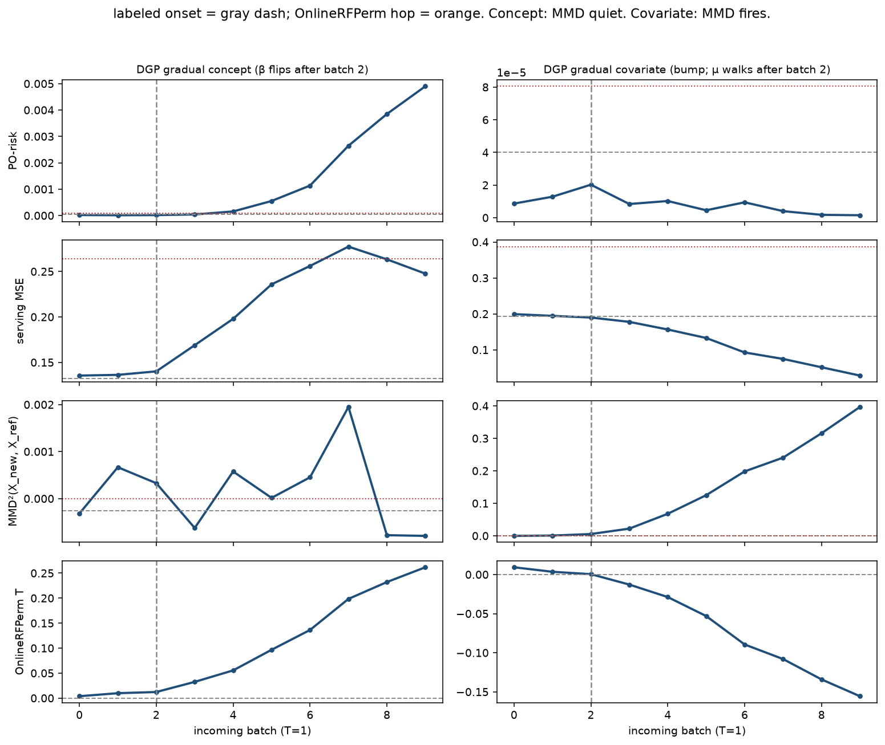
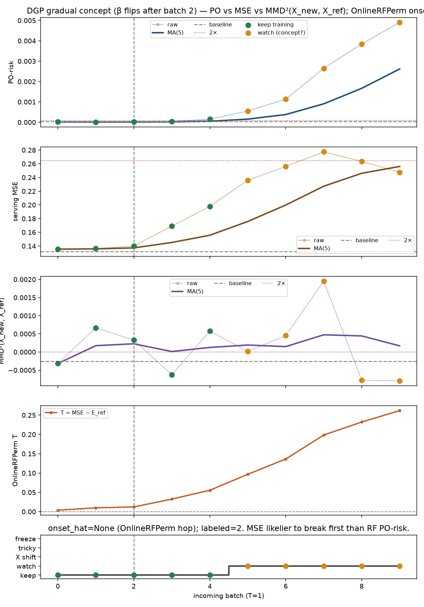
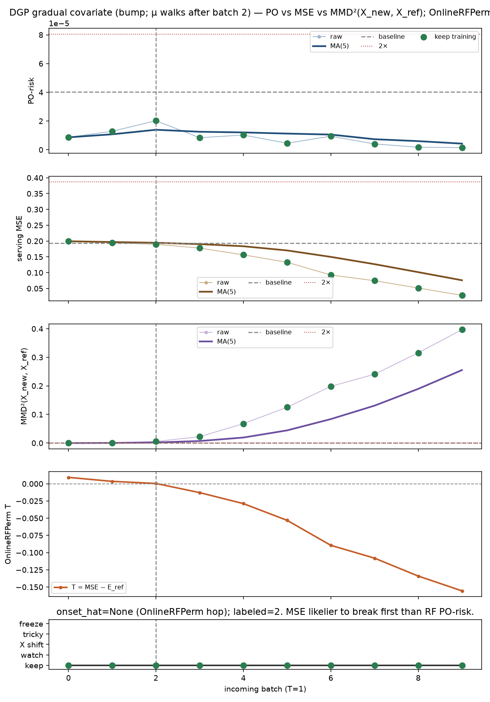
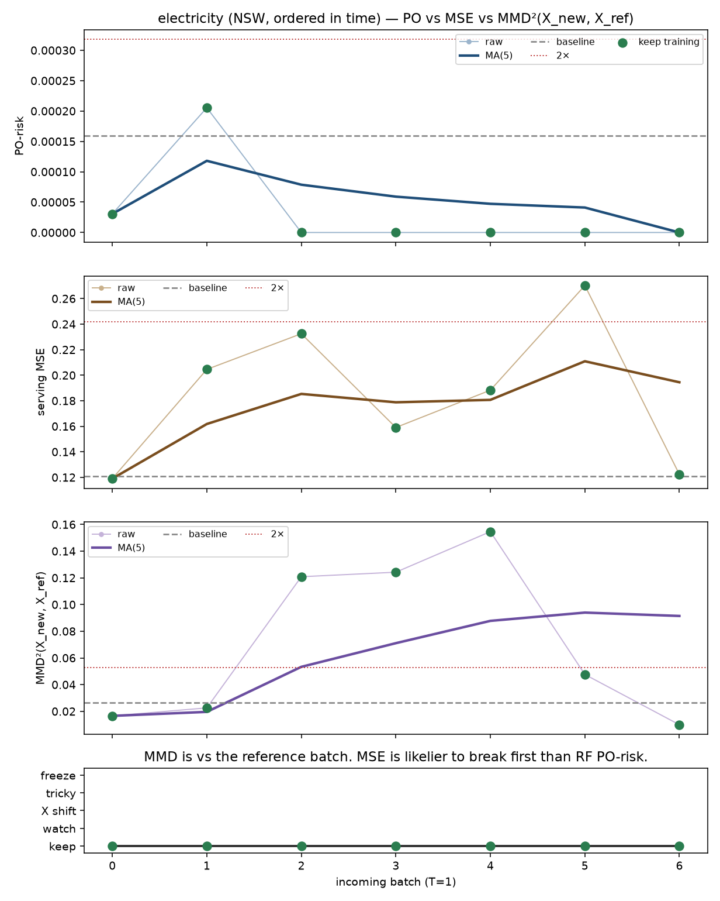
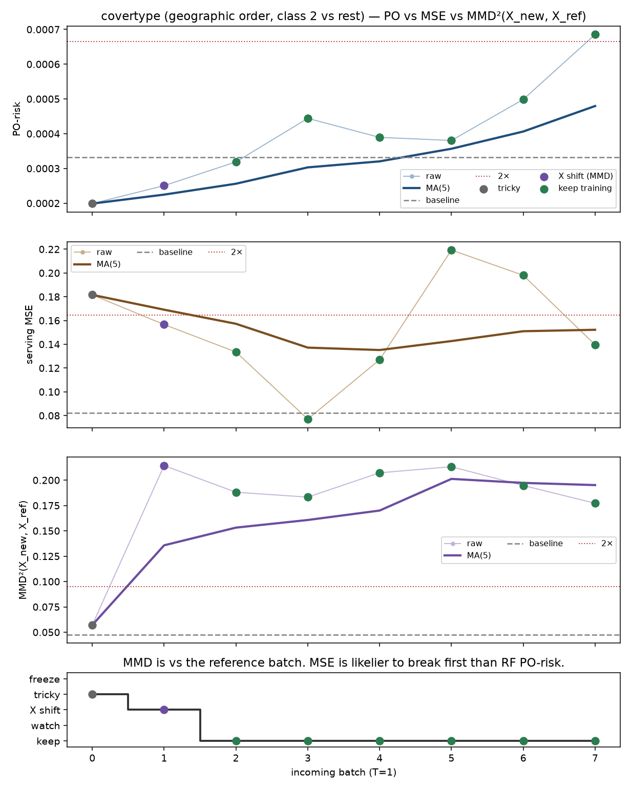
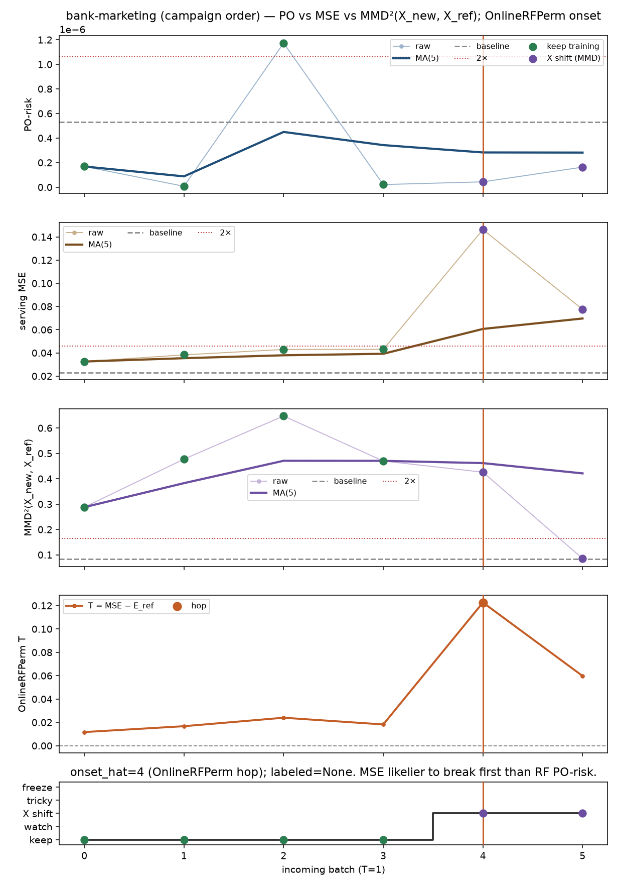

每一段新 batch 怎么读
前面 1 万行是 T=0。新来的这一段是 T=1。参考窗不再改。
独立随机森林估 μ(Y|X)、e(T|X)。问的是机制，不是现模型好不好。RF 不该突然崩。
MSE：现网络在新段上的误差。
MMD：只跟参考窗比 X，MMD²(X_new, X_ref)。
两都崩才冻层。PO 崩、模型没崩 → 再看。MSE 崩、PO 没崩 → 先看是不是 X 在动。
口径钉死：MMD 只对 参考窗，不对历史所有 batch 的 pairwise 均值，也不对上一层 representation。
冻住的 RandomForestRegressor().predict(X_new) 只用来标「何时跳了一下」。不做 online-bootstrap。
五种启发式动作
崩 = 因果移动平均 ≥ 2× 各自在参考窗上的 baseline。重点：RF 的 PO-risk 不该先突然塌；更可能先崩的是模型 MSE。
六张看板，一句话结论
对照实验：机制在变 vs X 在走
左：concept（β 慢慢翻）— MMD 安静，PO / MSE 动。右：covariate（均值走）— MMD 过线，PO 安静。灰虚线是标好的 onset，橙线是冻住 RF 标到的跳变。

DGP gradual concept (β flips after batch 2)
再观察机制在慢慢翻（β），X 没动。PO / MSE 抬，MMD 安静 → 再观察，先不冻层。

| 段 | PO-risk | 模型 MSE | MMD vs 参考窗 | 冻住 RF 的 T | 跳变 | 动作 |
|---|---|---|---|---|---|---|
| 0 | 1.92e-05 | 0.135 | -0.000318 | 0.00381 | 接着 train | |
| 1 | 1.11e-05 | 0.136 | 0.000667 | 0.00985 | 接着 train | |
| 2 | 1.65e-05 | 0.14 | 0.000328 | 0.0122 | 接着 train | |
| 3 | 4.04e-05 | 0.168 | -0.000625 | 0.0325 | 接着 train | |
| 4 | 0.000155 | 0.199 | 0.000576 | 0.0554 | 接着 train | |
| 5 | 0.000551 | 0.237 | 1.52e-05 | 0.0966 | 再观察 | |
| 6 | 0.00114 | 0.258 | 0.000453 | 0.136 | 再观察 | |
| 7 | 0.00265 | 0.278 | 0.00195 | 0.198 | 再观察 | |
| 8 | 0.00385 | 0.264 | -0.000778 | 0.232 | 再观察 | |
| 9 | 0.0049 | 0.247 | -0.000794 | 0.262 | 再观察 |
DGP gradual covariate (bump; μ walks after batch 2)
接着 train同一套 P(Y|X)，X 的均值在走。MMD 过线，PO 安静，模型还能用 → 接着 train。

| 段 | PO-risk | 模型 MSE | MMD vs 参考窗 | 冻住 RF 的 T | 跳变 | 动作 |
|---|---|---|---|---|---|---|
| 0 | 8.64e-06 | 0.199 | -0.000318 | 0.00924 | 接着 train | |
| 1 | 1.29e-05 | 0.193 | 0.000667 | 0.00349 | 接着 train | |
| 2 | 2.02e-05 | 0.188 | 0.0054 | 0.000426 | 接着 train | |
| 3 | 8.39e-06 | 0.175 | 0.0221 | -0.0129 | 接着 train | |
| 4 | 1.02e-05 | 0.156 | 0.0677 | -0.0288 | 接着 train | |
| 5 | 4.55e-06 | 0.132 | 0.125 | -0.0531 | 接着 train | |
| 6 | 9.44e-06 | 0.0927 | 0.198 | -0.0895 | 接着 train | |
| 7 | 4.03e-06 | 0.0746 | 0.241 | -0.108 | 接着 train | |
| 8 | 1.76e-06 | 0.0513 | 0.316 | -0.134 | 接着 train | |
| 9 | 1.51e-06 | 0.0282 | 0.397 | -0.156 | 接着 train |
electricity (NSW, ordered in time)
接着 train电价流。RF 的 PO-risk 没崩，MSE 的移动平均也没过 2× → 每一层接着 backprop。

| 段 | PO-risk | 模型 MSE | MMD vs 参考窗 | 冻住 RF 的 T | 跳变 | 动作 |
|---|---|---|---|---|---|---|
| 0 | 3.06e-05 | 0.119 | 0.0166 | 接着 train | ||
| 1 | 0.000205 | 0.205 | 0.0226 | 接着 train | ||
| 2 | 5.48e-09 | 0.232 | 0.121 | 接着 train | ||
| 3 | 3.54e-09 | 0.159 | 0.124 | 接着 train | ||
| 4 | 1.86e-08 | 0.188 | 0.155 | 接着 train | ||
| 5 | 1.98e-08 | 0.27 | 0.0476 | 接着 train | ||
| 6 | 3.33e-09 | 0.122 | 0.00996 | 接着 train |
covertype (geographic order, class 2 vs rest)
X 在动地理顺序。MSE 先崩、PO 安静、MMD vs 参考窗过线 → 不是 concept，是 X 在动。

| 段 | PO-risk | 模型 MSE | MMD vs 参考窗 | 冻住 RF 的 T | 跳变 | 动作 |
|---|---|---|---|---|---|---|
| 0 | 0.000199 | 0.182 | 0.0571 | tricky | ||
| 1 | 0.000251 | 0.157 | 0.214 | X 在动 | ||
| 2 | 0.000319 | 0.134 | 0.188 | 接着 train | ||
| 3 | 0.000444 | 0.077 | 0.183 | 接着 train | ||
| 4 | 0.000389 | 0.127 | 0.207 | 接着 train | ||
| 5 | 0.000381 | 0.219 | 0.213 | 接着 train | ||
| 6 | 0.000499 | 0.198 | 0.195 | 接着 train | ||
| 7 | 0.000685 | 0.14 | 0.177 | 接着 train |
bank-marketing (campaign order)
X 在动营销活动顺序。t=4 模型误差跳，PO 仍安静，MMD 过线 → X shift。

| 段 | PO-risk | 模型 MSE | MMD vs 参考窗 | 冻住 RF 的 T | 跳变 | 动作 |
|---|---|---|---|---|---|---|
| 0 | 1.68e-07 | 0.0344 | 0.288 | 0.0117 | 接着 train | |
| 1 | 7.5e-09 | 0.0383 | 0.477 | 0.0167 | 接着 train | |
| 2 | 1.17e-06 | 0.043 | 0.647 | 0.024 | 接着 train | |
| 3 | 2.13e-08 | 0.0436 | 0.47 | 0.0182 | 接着 train | |
| 4 | 4.35e-08 | 0.144 | 0.426 | 0.123 | 跳 | X 在动 |
| 5 | 1.63e-07 | 0.0775 | 0.0853 | 0.0598 | X 在动 |
eeg-eye-state (time-ordered EEG)
X 在动脑电时间序。t=2 误差跳，PO 安静，MMD 过线 → 同样是 X shift。

| 段 | PO-risk | 模型 MSE | MMD vs 参考窗 | 冻住 RF 的 T | 跳变 | 动作 |
|---|---|---|---|---|---|---|
| 0 | 0.000774 | 0.319 | 0.0943 | 0.206 | X 在动 | |
| 1 | 0.00045 | 0.155 | 0.116 | 0.0731 | 接着 train | |
| 2 | 0.000513 | 0.722 | 0.114 | 0.35 | 跳 | X 在动 |
| 3 | 0.000301 | 0.377 | 0.177 | 0.179 | X 在动 | |
| 4 | 0.000639 | 0.345 | 0.0818 | 0.179 | X 在动 |